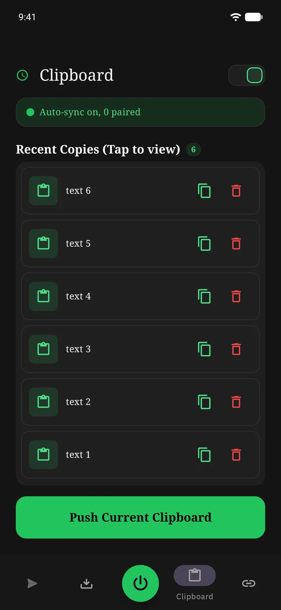
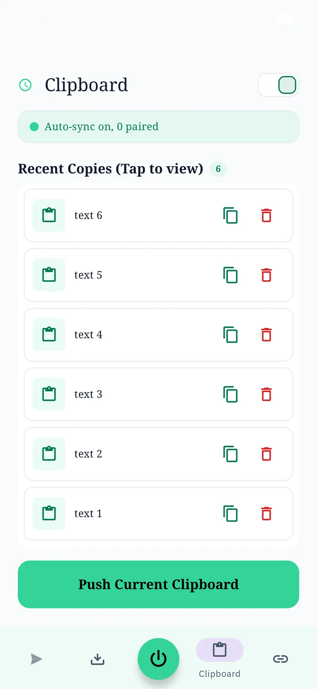
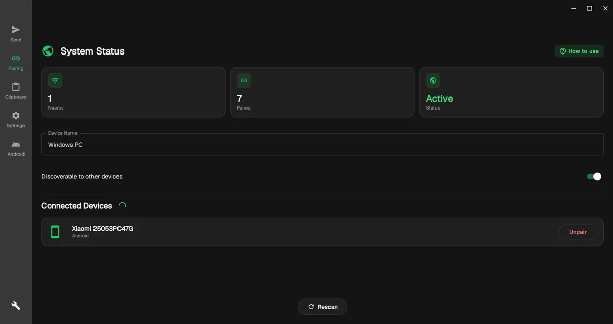
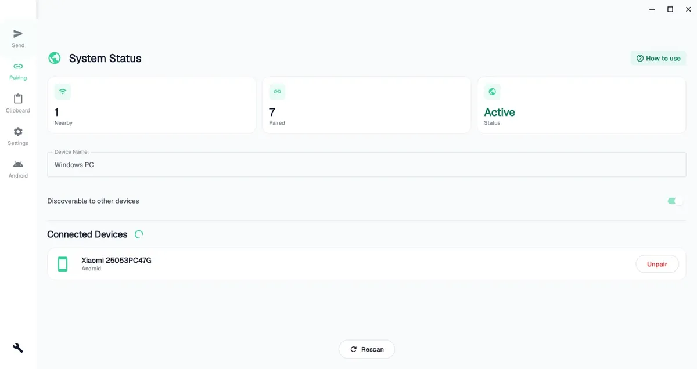
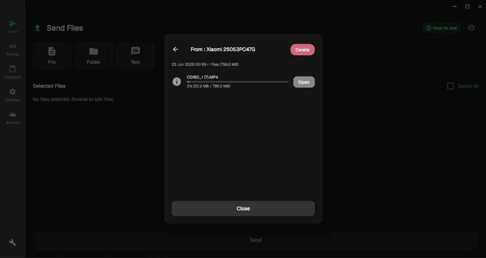
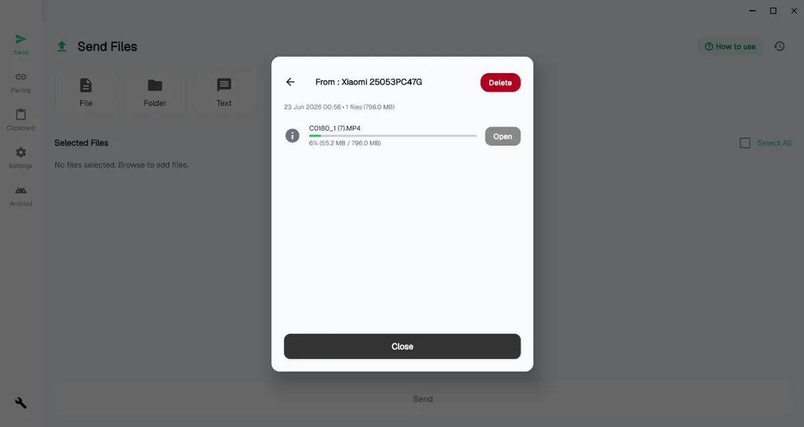
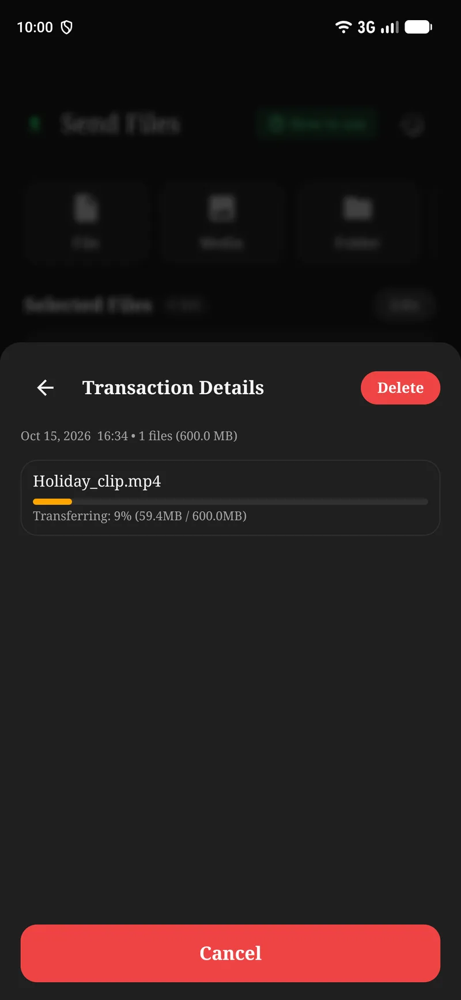
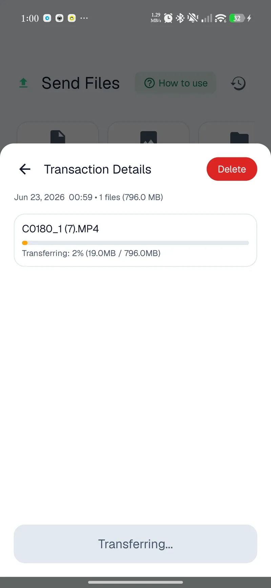
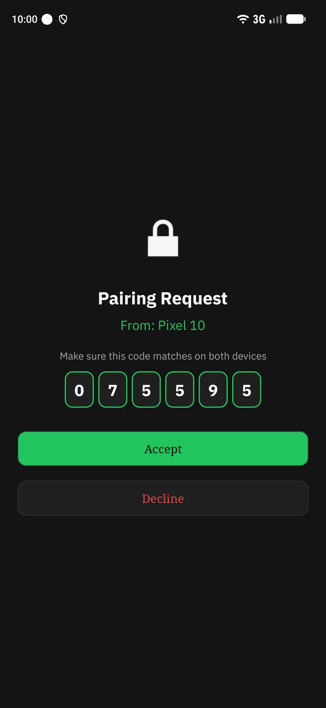
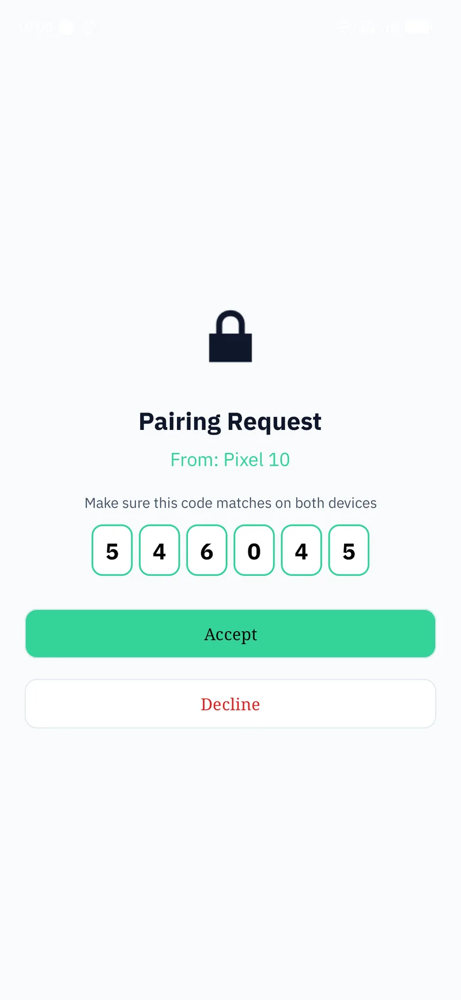

Android
v3.6.5
Google Play
—
Download for Android
Verify checksum
Clipboard Share syncs text and sends files between your Android phone and Windows PC, directly, device to device. Pair once by confirming a 6-digit code, then move files over your network or completely off-grid via QR or NFC. Encrypted end to end; nothing ever touches a server.




Copy a link, a code snippet, an address on one device and it's ready to paste on the other. Sync runs quietly in the background, or push it on demand.
Photos, videos, documents, whole folders, even APKs. Multi-gigabyte transfers move device to device, and pick up right where they left off if the link drops.




Clipboard Share automatically finds the fastest link between your devices, and falls back gracefully when there's no router in sight.
Tries the fastest path first and steps down only if needed, with no settings to fiddle with.
Every send starts at the top rung and only steps down when a faster path isn't available. You never pick a mode; the app probes and commits in under a second.
Tap two phones to start an off-grid file transfer, no network needed. Android
Hold two Android phones back-to-back and the bump hands off the connection details, so the transfer starts without a pairing screen or a shared network.
Scan a QR to send or receive files with no shared Wi-Fi. Both platforms.
When there's no network to join, one device shows a QR that carries the link details and the other scans it to connect. No typing, no router.
One device hosts and the other joins, with no shared network required.
One device raises a local hotspot and the other joins it, forming a private two-device network. It's the fallback when there's no LAN and Wi-Fi Direct isn't available.
Send straight from any Android app's share button. Android
Clipboard Share registers as a share target, so a photo, PDF or link goes to your PC straight from whatever app you're already in. No need to open the app first.
Browse past transfers and copies.
Every copy and transfer is logged on the device so you can find something later and send it again without hunting for the original.
“Push to PC” from the Android pull-down, without opening the app. Android
Drop a Push to PC tile into the Android quick-settings panel and your current clipboard lands on the paired PC in one tap, without ever leaving what you're doing.
A considered theme on both platforms. Try the toggle up top.
Both apps ship a hand-tuned light and dark theme that follows your system by default and flips on demand, so Clipboard Share looks at home wherever it runs.
On the same network, devices discover each other automatically, ready to pair.
Both devices show a 6-digit code. Confirm they match and accept; that blocks impostors.
Clipboard syncs automatically; send files over the network, or off-grid via QR / NFC when there's no shared Wi-Fi.
There is no cloud to breach and no account to leak. Pairing is verified face-to-face with a 6-digit code, and everything in flight is encrypted with keys that exist only on your hardware.
Read the FAQ

A 6-digit code from an ECDH key exchange. You confirm it matches, which stops man-in-the-middle attacks.
Pairing runs an ECDH key exchange, then shows a 6-digit Short Authentication String on both screens. If the numbers match, no one is sitting in the middle.
Every clipboard payload and file is AES-256 encrypted in flight; the clipboard uses authenticated AES-GCM. Nothing travels in the clear.
Whatever you send is sealed with AES-256 before it leaves the device. The clipboard path uses authenticated AES-GCM, so tampering is detected, not just hidden.
Per-pairing keys live only on your devices, never uploaded or shared.
The keys that protect your data are generated on your devices and kept in the OS keystore. They're never uploaded, never shared, and never escrowed anywhere.
No analytics, no ads, no third parties. The app simply doesn't phone home.
There are no analytics SDKs, no ad networks and no crash-reporting that phones home. The app has nothing to send about you and nowhere to send it.
Clipboard sync, file transfer, off-grid QR transfer and AES-256 work on both. A few abilities depend on the hardware each platform has.
On phones, Clipboard Share is the full toolkit: every off-grid path plus the OS hooks only Android exposes.
The desktop build runs quietly from the system tray and ships its own runtime, so there's no Java to install.
It's free, with no account. Pick your platform; your device is highlighted below.
You're on another platform. Clipboard Share runs on Android and Windows. Grab a build below and install it on a supported device.
Builds are published for Android and Windows.
No. On the same Wi-Fi it goes direct over your LAN; with no network at all it creates its own link via QR, NFC, Wi-Fi Direct or a hotspot bridge. Nothing routes through the internet.
It only reaches devices on your local Wi-Fi, and that traffic never crosses onto the internet, so it doesn't count against a data plan. It also can't discover devices over cellular — you need the same Wi-Fi, or an off-grid QR / NFC link.
Never. There are no servers and no account. Clipboard contents and files move straight between your paired devices, AES-256 encrypted, with keys stored only on your hardware.
It's a Short Authentication String derived from a secure key exchange. Both devices show the same number, and confirming they match proves you're connected to the right device and not an impostor.
Multi-gigabyte transfers are supported, with live per-file progress. If the connection drops mid-transfer it resumes rather than starting over.
Android installs from Google Play. The Windows version is a standard installer with a bundled runtime, so there's no Java to set up. It isn't code-signed yet, so Windows may flag it the first time; the next question covers what to do.
That's Windows reacting to the missing code signature, not to anything the app does. It shows up two ways. SmartScreen displays a blue “unknown publisher” notice you can pass with More info, then Run anyway. Smart App Control, a stricter Windows 11 feature that's switched on for some machines, can block it outright with “couldn't verify the publisher,” and by design it has no per-app override.
Clipboard Share is off-grid, has no account and runs nothing in the background; it's simply an unsigned indie build with no reputation yet. You can confirm the download with the SHA-256 on the Windows card above. The build has been submitted to Microsoft for review and a properly signed release is on the way, so if Smart App Control is blocking you, the signed build (or checking back once the review clears) is the fix. We don't suggest turning the feature off.